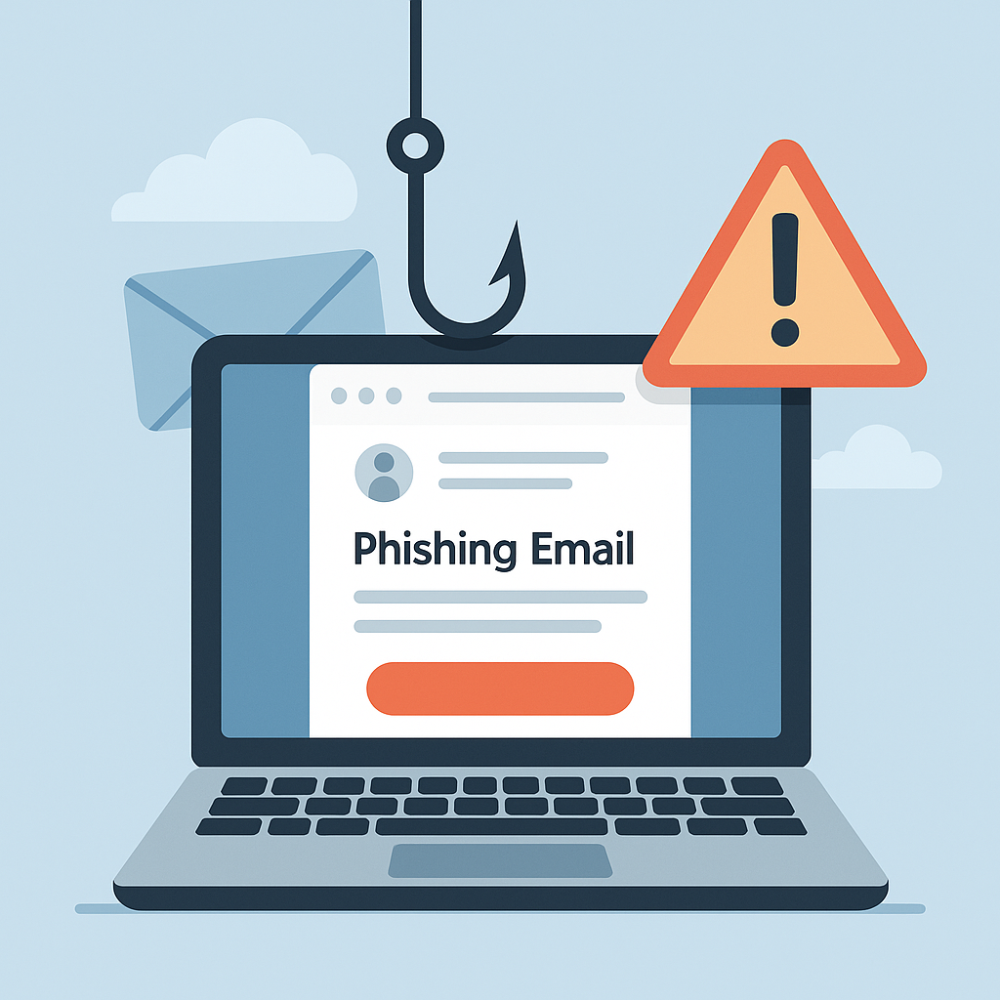
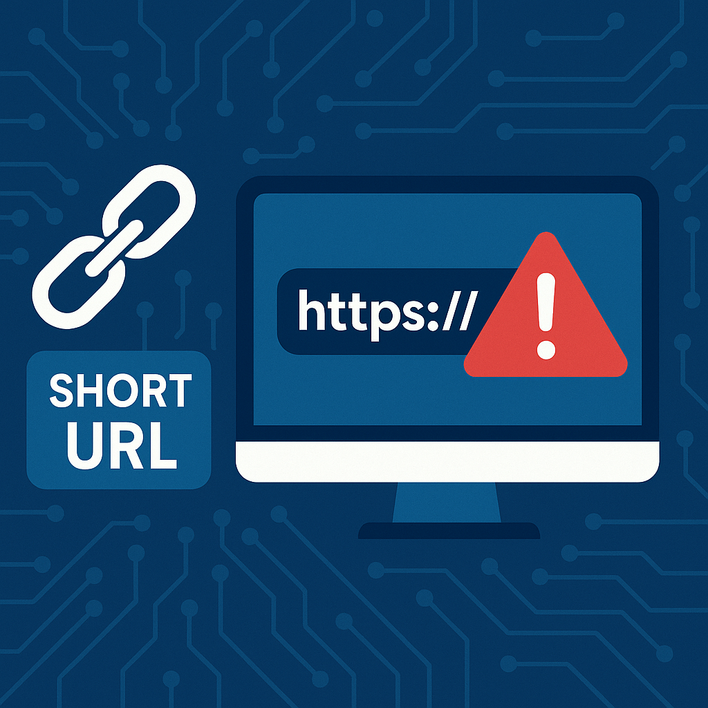

Student Project
Turning security awareness into a more visual and memorable web experience
This project reframes cybersecurity education for everyday users through illustrations, short explanations, an embedded explainer video, a phishing-style interaction demo, and a lightweight browser game.
Project focus
- Explain common cyber risks in plain language.
- Use interaction to increase retention and attention.
- Make awareness content feel less like a textbook page.
Overview
Information security is not only a technical concern for specialists. It also depends on the daily behavior of ordinary users, including password choices, link-clicking habits, and the ability to recognize suspicious requests.
This website breaks cybersecurity awareness into several accessible topics so that users can quickly understand practical risks and the actions they can take to reduce them.

Common Threats
Phishing: Attackers impersonate trusted services such as banks, shopping platforms, schools, or internal systems to steal passwords, verification codes, and personal data.
Weak or reused passwords: Reusing the same password across different platforms creates a chain reaction: one leaked service can expose multiple accounts.
Malicious links and downloads: A normal-looking link or attachment may redirect users to fake pages or harmful downloads.
Protection Tips
- Use strong, unique passwords and store them with a password manager.
- Enable multi-factor authentication for important accounts.
- Verify urgent login, payment, or profile-update requests before responding.
- Preview suspicious short links before opening them.
- Keep browsers, systems, and devices up to date.

Why Short Links Can Be Risky
Short links are useful for sharing, but they hide the real destination. That makes it harder for users to judge whether a site is trustworthy before clicking.
- The real domain is hidden until after the click.
- They often appear in promotions, direct messages, and social posts.
- They can redirect to phishing pages, trackers, or malicious downloads.
A good habit is to inspect unknown short links with CheckShortURL or a similar preview tool.
Explainer Video
The embedded video reinforces the main ideas behind phishing risk and suspicious links, making the site more useful for classroom or awareness-sharing scenarios.
Phishing Trap Demo
This button simulates a suspicious interaction. Clicking it triggers a burst of automatic downloads to remind users that seemingly harmless actions can have unexpected consequences.
Mini Game: Dodge the Bugs
Press the space bar on desktop or tap on mobile to jump over incoming bugs. The game adds a playful memory anchor to an otherwise serious awareness topic.